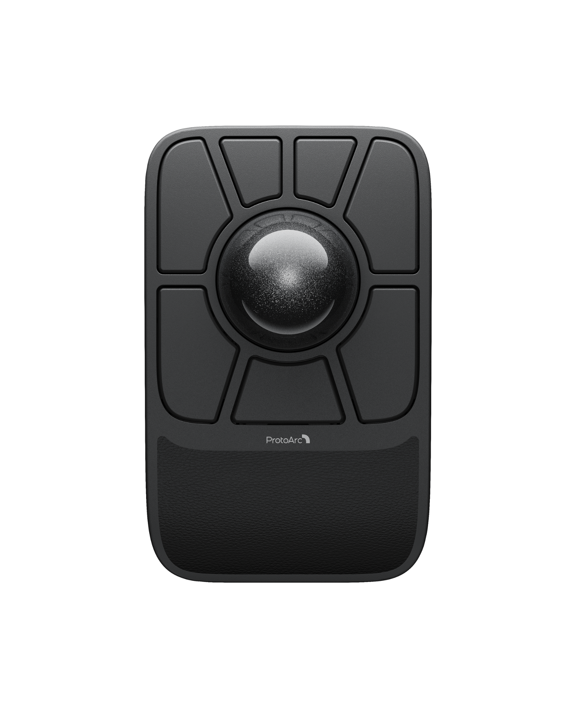
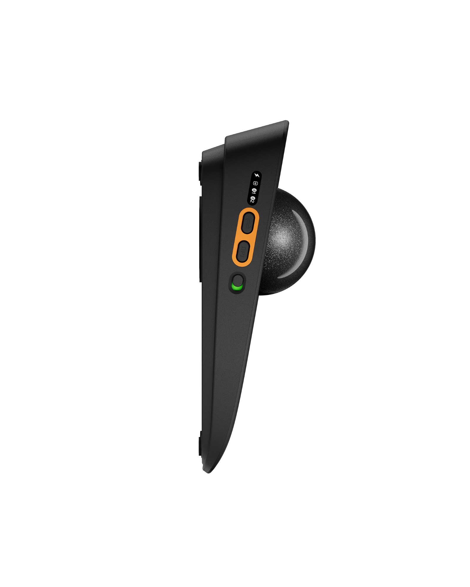

PROFILE 1
Profile 1
Not loaded
EM06 / TOP PLATE

Select a control on the mouse
SELECTED CONTROL
Button 1
Read a profile to see its current mapping.
Current action: No function assigned

Read this profile to edit it.
Click any control on the image to edit it.
PROFILE CYCLE HELPER
Assign to any key
Choose a key, then set it to the next profile on each onboard profile.
1→2→3→4→1
PROFILE COPY
→Duplicate a profile
Copy one local profile draft over another. Nothing is written until you choose Write.